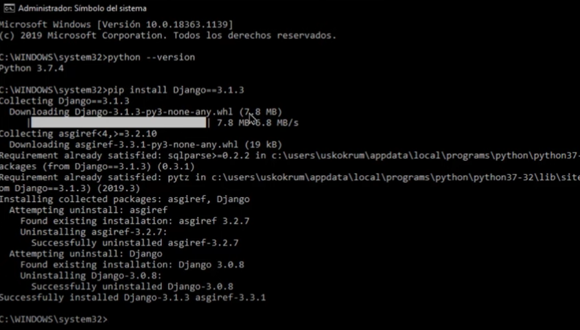
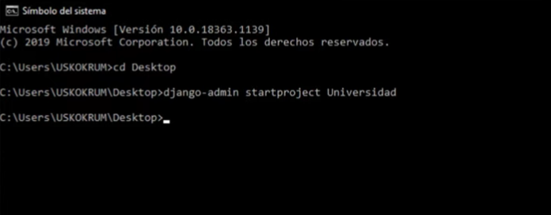
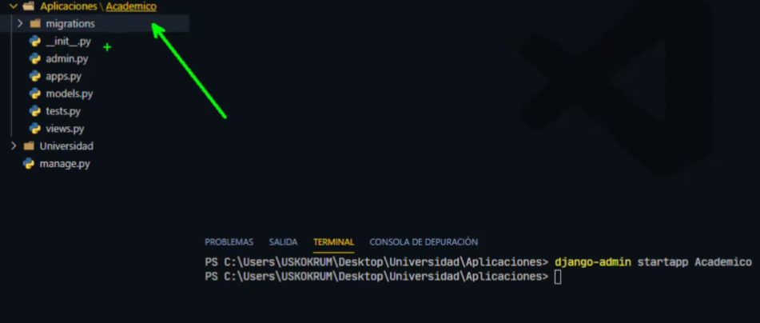
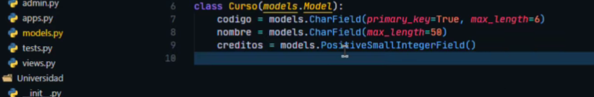
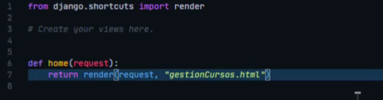
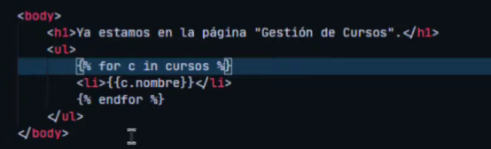
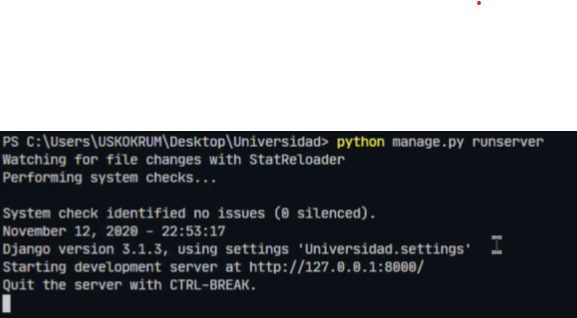

1. Instalación de Django
Primero, asegúrate de tener Python instalado. Luego, instala Django usando pip:
pip install djangoimagen de ejemplo:
2. Crear un Proyecto Django
Crea un nuevo proyecto con el siguiente comando:
django-admin startproject mi_proyectoImagen de ejemplo:
3. Crear una Aplicación
Dentro de tu proyecto, crea una aplicación usando:
python manage.py startapp mi_appimagen de ejemplo:
4. Configurar el Modelo
Define tus modelos en models.py. Por ejemplo:
class Producto(models.Model):
nombre = models.CharField(max_length=100)
precio = models.DecimalField(max_digits=10, decimal_places=2)Imagen de ejemplo:
5. Crear Vistas y URLs
Define tus vistas en views.py y mapea las URLs en urls.py.
from django.shortcuts import render
from .models import Producto
def lista_productos(request):
productos = Producto.objects.all()
return render(request, 'lista_productos.html', {'productos': productos})imagen de ejemplo:
6. Crear Plantillas
Crea plantillas HTML para renderizar tus datos. Por ejemplo, en lista_productos.html:
<h1>Lista de Productos</h1>
<ul>
{% for producto in productos %}
<li>{{ producto.nombre }} - ${{ producto.precio }}</li>
{% endfor %}
</ul>Imagen de ejemplo:
7. Ejecutar el Servidor
Finalmente, ejecuta el servidor de desarrollo:
python manage.py runserverimagen de ejemplo:
